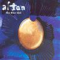

Celtic Lyrics Corner > Artists & Groups > Altan > The Blue Idol > An Cailín Deas Óg
|  | An Cailín Deas Óg |
| Credits : | Traditional; arranged by Mairéad Ní Mhaonaigh, Mark Kelly, Ciaran Curran, Dermot Byrne, Ciaran Tourish & Donal Lunny |
| Appears On : | The Blue Idol |
| Language : | Gaeilge (Irish Gaelic) |
| Other Versions : | " The Pretty Young Girl " on Altan's album The Blue Idol |
Lyrics :
An cailín deas óg a bhfuil mé ar a tóir
Mo chreach mhaidne brón ní castar liom í
Tráth théim go tigh an óil, chuig damhsa, nó spórt
Ach leanfad sa ród í ar uair an mheán oích'
Curfá
:
Mar is tusa an fear óg a shiúlfas go leor
Faigh domhsa seod a bheas agam mar mhnaoi
Ná santaigh go deo maoin chaorach nó bó
Ach inseoidh mé an nós duit ina dtógfaidh tú í
Bíodh sí lách óg gan mhairg gan ghruaim
Stuama go leor ar gach uile sheort ní
Tuicsneach ró-dheas gan an iomarca bróid
Siúd í mo stóirín da mbéadh sí gan pingin
(Curfá)
Bíodh sí gan smál i gclú is i gcáil
Glan ina croí agus séimh ina méin
Gan gangaid nó gráin i mbriathra a béil
Is aoibh ar a h-éadan ó mhaidin go h-oích'
(Curfá)
Ach inseoidh mé an nós duit ina dtógfaidh tú í